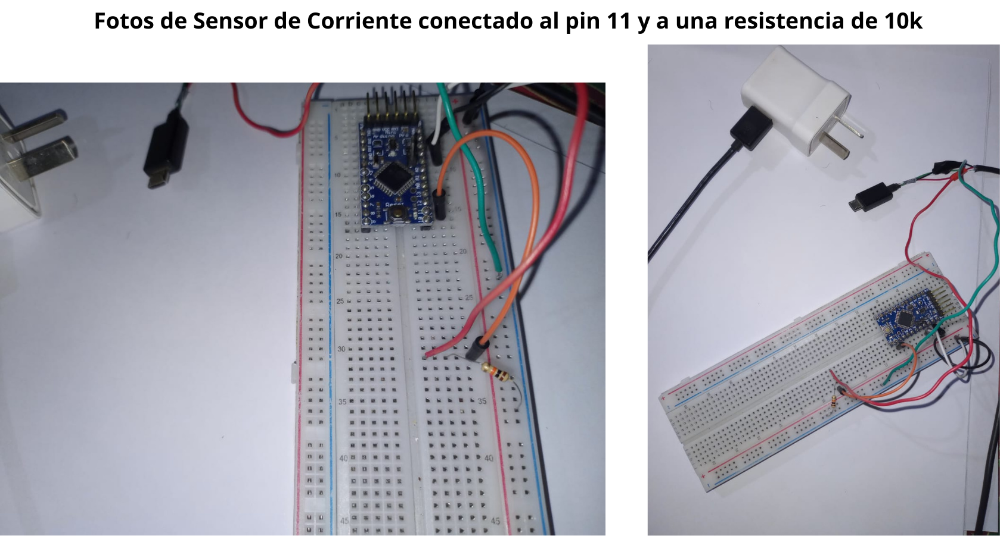

Descripcion de sensor de corriente
El sensor de electricidad fue realizado apartir de un cable de cargador de 5V.
Colocamos un cable (rojo) en el cable positivo del cargador, y un cable (verde) en el
negativo. Como el mismo cable es usado posteriormente para cargar la Power Bank, se coloco
un diodo. Este se encarga de que la corriente vaya desde el cargador a la Power Bank y
y no en sentido contrario. Cabe destacar que no todas las Power Bank
permiten alimentar en sentido contrario, por lo tanto en ellas no es fundamental
el uso del diodo.
Esquema del sensor de corriente
El esquema que se muestra a continuación corresponde a la conexión del sensor de electricidad utilizando
el pin 11 de la placa y una resistencia de 10k y PULL DOWN, debido a la captación de corrriente. Es
decir, cuando se corta la luz, la resistencia pasa un valor 0V, indicando que no hay electricidad. En
caso contrario, el valor recibido será distinto de 0V. Este comportamiento nos permite advertir al
responsable de la incubadora cuando ocurre un corte de luz.
A su vez, el sensor, se conecta a GND (negativo) y VCC (positivo) en las filas correspondientes
de la protoboard.
A continuación, observamos la imagen de conexión del sensor de electricidad a la placa.
